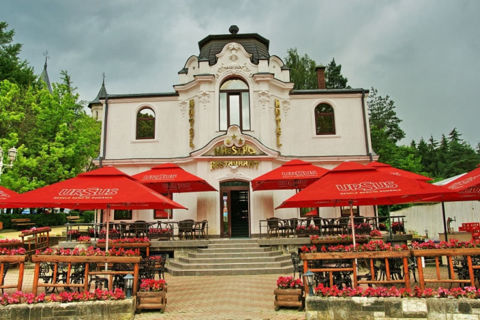
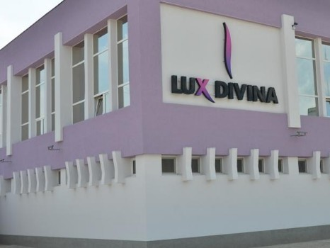
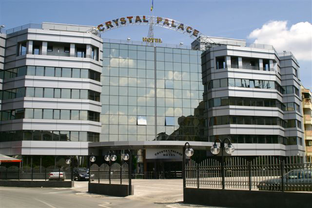
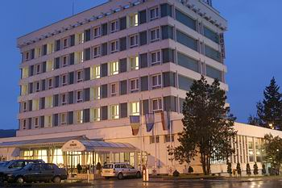

|  |
Hotel MAESTRO |
Orașul Vatra Dornei, Str. Republicii, Jud. Suceava |
48 |
☆☆☆
|
Hotel Maestro |
Situat central in municipiul Vatra Dornei, hotelul reprezinta locul ideal pentru odihna, relaxare si punct de plecare pentru vizitarea obiectivelor turistice din zona,
mentionand Manastirea Voronet, Manastirea Humor, Manastirea Moldovita, Manastirea Sucevita, Manastirea Putna si Arbore.
|
|  |
Hotel LUX DIVINA |
Brașov, str.13 Decembrie, nr. 96, jud. Brasov |
106 |
☆☆☆☆
|
Hotel Divina |
Cele doua corpuri de hotel, Dacia si Parc, ofera un numar de 55 de spatii de cazare alcatuite din 50 camere duble, 4 camere single si un apartament.
Fiecare spatiu dispune de conexiune wi-fi gratuita, televiziune prin cablu, aer conditionat si ofera loc de parcare gratuit, monitorizat.
Mic-dejunul, pranzul sau cina sunt pregatite de bucatarii nostri si stim ca avem una dintre cele mai bune echipe de bucatari din Brasov.
Suntem atenti la fiecare detaliu si putem oferi la cerere servicii suplimentare. Trebuie doar sa iti doresti! |
|  |
Crystal Palace |
Strada Alexandru Serbanescu, nr. 18-20, Bucuresti |
90 |
☆☆☆☆☆
|
Crystal Place |
Localizat in zona rezidentiala de nord a Bucurestiului, Crystal Palace Hotel se afla la o distanta convenabila de cateva dintre cele mai bune locatii
pentru cumparaturi, divertisment si restaurante. Crystal Palace Hotel este situat in apropiere de faimosul Romexpo - Centrul Expozitional Bucuresti, la 10
minute de Aeroportul International Otopeni, precum si de centrul orasului. |
 |
Hotel Opera Plaza |
Str. G-ral Traian Mosoiu, Nr. 10-12, Cluj-Napoca,Romania |
89 |
☆☆☆☆☆
|
Hotel Opera Plaza |
Situat in centrul istoric al orasului, hotelul Opera Plaza isi alimenteaza corpul arhitectonic cu vibratiile Operei Romane,
aflata la doar cativa pasi. Prin imbinarea armonioasa dintre clasic si modern, acest spatiu este dincolo de dimensiunea temporala,
adaptandu-se perfect varstei si asteptarilor tuturor celor care-i trec pragul. Linia calda si eleganta a hotelului se inscrie in atmosfera
celei mai frumoase piete a orasului vechi. Beneficiind de o tratare inovativa, hotelul ofera toate avantajele tehnologiei moderne. |
|  |
Hotel Tarnava |
P-ta Primariei nr. 16,Odorheiu Secuiesc,Harghita,Romania |
107 |
☆☆☆
|
Hotel Tarnava |
Odorheiu Secuiesc este situat pe latura sud estica a bazinului transilvanean pe valea Tarnavei Mari. Premisele sale geografice se datoreaza pozitionarii,
la intalnirea platoului vulcanic al muntilor Harghita cu dealurile mai joase de-alungul vaii Tarnavei.
Hotelul Tarnava*** isi asteapta clientii cu 72 de camere, din care 10 simple, 58 cu doua paturi, respectiv 4 apartamente,
avand o capacitatea de 143 de locuri
Serviciile oferite: receptie non-stop cu personal cunoscator de limbi straine, pastrarea bunurilor valorice, telefon, internet,
fax, xerox, intermedierea mesajelor, comanda taxi si flori, boutique, trezire telefonica, spalatorie, pastrarea bagajelor, inchirieri de jocuri
(romi, carti, domino, sah), organizarea excursiilor, sala de fitness, solar, sauna, jacuzzi, masaj, drink bar.
|
|
Hotel Opera Plaza |
Str. G-ral Traian Mosoiu, Nr. 10-12, Cluj-Napoca,Romania |
89 |
☆☆☆☆☆
|
Hotel Opera Plaza |
Situat in centrul istoric al orasului, hotelul Opera Plaza isi alimenteaza corpul arhitectonic cu vibratiile Operei Romane,
aflata la doar cativa pasi. Prin imbinarea armonioasa dintre clasic si modern, acest spatiu este dincolo de dimensiunea temporala,
adaptandu-se perfect varstei si asteptarilor tuturor celor care-i trec pragul. Linia calda si eleganta a hotelului se inscrie in atmosfera
celei mai frumoase piete a orasului vechi. Beneficiind de o tratare inovativa, hotelul ofera toate avantajele tehnologiei moderne.
|